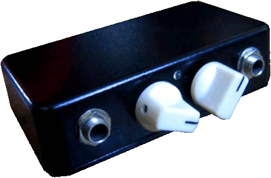
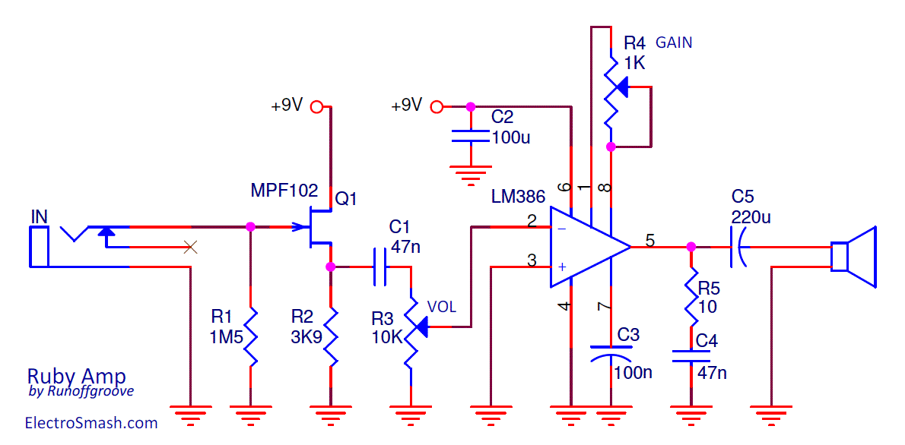
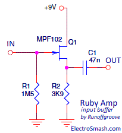
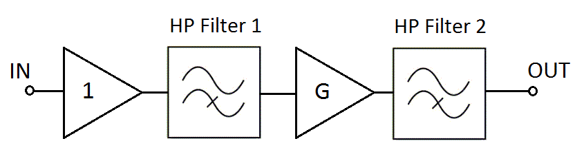
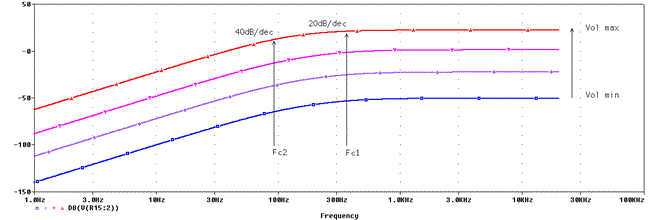
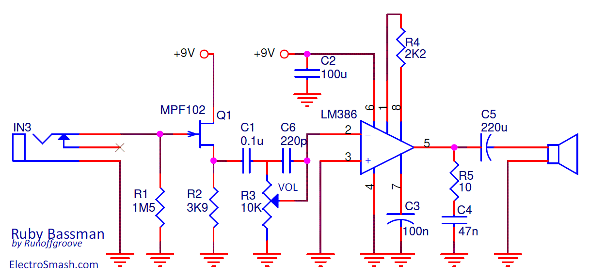
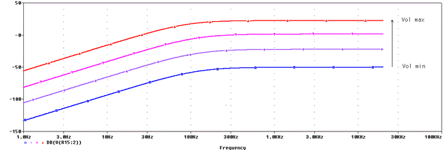
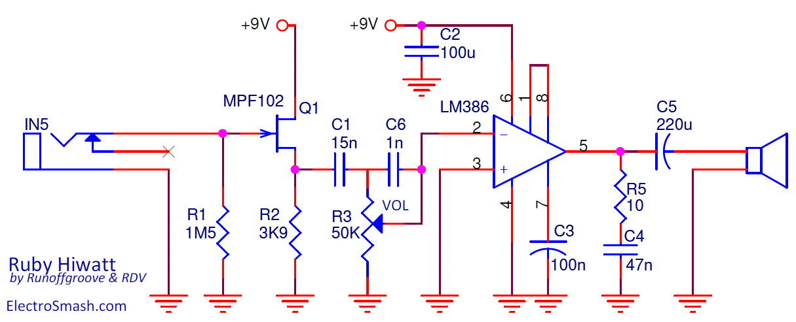
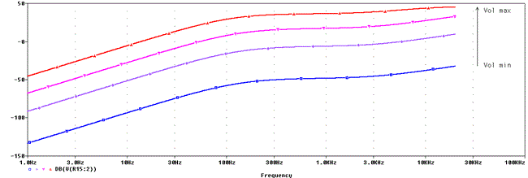
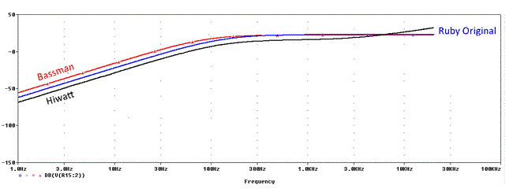

Ruby Amp Analysis
The Ruby Amp is an LM386 based guitar amplifier. It is an enhanced version of the previous Little Gem Amp also designed by Runoffgroove. The main improvements of the Ruby Amp vs the Little Gem are new the input buffer, a renovated volume control, and an updated Gain potentiometer.

Table of Contents
1. Ruby Amp Schematic Diagram.
1.1 Input Buffer.
1.2 Volume Circuit.
1.3 Gain Circuit.
1.4. Stabilization Techniques.
2. Ruby Amp Frequency Response.
3. Ruby Amp Adjustment.
4. Ruby Amp Mods.
4.1 Ruby Bassman Analysis.
4.1.1 Frequency Response.
4.2 Ruby Hiwatt Analysis.
4.2.1 Frequency Response.
4.3 Headphones Plug.
4.4 Pre-set Gain Ceiling.
4.5 12v Power Supply.
1. Schematic Diagram.
The original super-simple Smokey Amp was reviewed by RunOffGroove who created the Little Gem, now once again the circuit gets reviewed adding new capabilities:
- The input buffer (which keeps isolated the guitar and preserves the tone) The N-Channel JFET input buffer will solve one of the main LM386 op-amp lacks: the low input impedance.
- The new placement of the Gain potentiometer follows the LM386 recommendation and is a better solution than the previous Little Gem rheostat.

1.1 Input BufferThe input buffer is a basic JFET common drain transistor amplifier (this part of the circuit was probably inspired by the Jack Orman designs).It presents a high input impedance avoiding tone sucking, keeping the treble detail. It also has a low impedance output drive with unity gain.

- The input impedance is determined by the value of R1 and it is 1M5. The value of R2 is not critical and any value from 3.3K to 10K would work without much change on the tone. It is better to use lower resistor values since this allows more drive on the negative portion of the audio cycle where the only pull-down is the source resistor.
- The output impedance will depend on the JFET transistor but is on the order of a few hundred ohms.
1.2 Volume Circuit
The R3 Volume potentiometer limits the amount of signal into the 386. As the Volume is increased, you will start getting nice breakup. Remember that the input voltage bounds for LM386 are ±0.4V, over/under these levels, the signal will be clipped.
1.3 Gain Circuit
The 1K logarithmic potentiometer (R4) is placed between pins 1 and 8 in order to adjust the gain from 41 (28dB) to 200 (46db). Following the general LM386 voltage gain formula (from the datasheet):
Where Z1-5 and Z1-8 are the impedances between the respective pins. Note that Z1-5 internal resistance is 15K and Z1-8 is 1.35K.
1.4. Stabilization Techniques
Following the LM386 application notes, some measures should be taken to increase the stability and prevent signal degradation:
- Capacitor on pin 7: Unlike the Little Gem, the Ruby Amp does include a 100nF C3 capacitor from pin 7 to ground in the 386 IC. It is used to avoid the power supply noise to be amplified and reach the output. In this way, the high-gain input stage of the chip is isolated from the supply noise.
- Capacitor on power supply rails: The supply pin 6 is bypassed to ground with a 100uF C2 capacitor to forestall oscillation. It should be placed as close to the chip as possible.
- Zobel Network: This network formed by a series 10Ω R5 resistor and a 47nF C4 cap to ground is introduced in the output path. This will stabilize the amp and restore the clean tones wiping some spurs. The RC network is a compensating circuit for the load (speaker), not for the amplifier. For more info, check the similar design used also in the Little Gem Amp.
2. Frequency Response
The frequency response is tailored by two buffered cascaded high-pass filters:

- The first high-pass filter cut-off frequency is around 360Hz and it is formed by C1 and R3 (note that the volume resistor wiper is loaded by the LM386 input resistance, which is 50K). The cut-off frequency is variable or "volume dependent" following the equation below. However, this unwished variation is very small and only present at low volume levels, this tiny tone change is barely noticeable:
- The second high-pass filter formed by C5 and the speaker load (8Ω) is a classic bass cut filter, that will start rolling off bass under 90Hz to keep the small speaker from farting out and also removing any DC component from the output signal. For more detailed info check the "Smokey Amp Frequency Response".
So taking both filters into consideration, the graph gain vs frequency looks like this:

The graph above shows from blue to red the responses from minimum to maximum volume respectively. The Gain is fixed to 100 (40dB) for this experiment.
The first HP filter formed by C1 and R3 has a cut-off frequency of 360Hz approx. (Fc1), under this frequency, the signal level decreases at 20dB/dec.
The second HP filter formed by C5 and the speaker load has a cut-off frequency of 90Hz (Fc2), under this frequency the signal level decreases at 40dB/dec.
Should be noted that the input buffer plays an important role in the frequency response. Due to the intrinsic LM386 low input impedance, in previous designs like the Smokey Amp or the Little Gem the circuit could be load by the guitar pickups. Using a high input impedance buffer, the guitar signal integrity is granted and all tones are preserved.
3. Adjusting a Little Gem - Set Up.
The Gain/Volume pots are highly interactive, Runoffgroove gives some advice:
- Clean sound: set the Volume pot to max and slowly turn up the Gain pot. Find the point just before the sound starts to break up and you have the maximum clean volume available
- Overdrive sound: turn up the Gain pot to the desired maximum gain and adjust the Volume pot.
If you have the Gain pot set high and you are still not getting desirable overdrive, you'll have to turn up the Volume pot to let more signal pass to the 386.
4. Mods
There is a bunch of possible modifications, the most famous are the "Bassman" and "HiWatt" versions, adding a headphone jack, a Gain Ceiling and 12V power supply:
4.1 Ruby Bassman Analysis
This mod tries to imitate the old Fender Bassman tone:
- With the Volume pot at half rotation and below, you will notice smooth and sparkly cleans with good depth.
- With the Volume pot set high, you will hear nice overdrive that is great for blues playing. The transition from dirty to clean can be controlled with your picking or strumming, adding an extra dimension to your playing.

Bassman modification step by step:
- Replace the .047uF cap from the FET source pin to the volume pot with a 0.1uF C1 cap.
- Place a 220pF C6 cap from lug 3 to lug 2 on the volume pot.
- Remove the Gain pot and place 2K2 R4 fixed resistor between pins 1 and 8.
In the Ruby Bassman, the Gain is level fixed to 30, remember that the Original Ruby Gain is variable from 41 to 200, so the signal, in this case, will be less distorted.
Where Z1-5 and Z1-8 are the impedances between the respective pins. Note that Z1-5 internal resistance is 15K and Z1-8 is 1.35K.
4.1.1 Ruby Bassman Frequency Response

The graph shows from blue to read the responses from minimum to maximum Volume respectively. As mentioned before in this amp the Gain is fixed at 30.
The tone of this mod is very close to the original amp, it only adds a little more bass as you will see in the Ruby vs Bassman vs Hiwatt comparison chart. In this mod, the first high-pass filter shifts down the cut-off freq, from 360Hz to 211Hz approx, adding some bass and body to the signal. If you add this factor to the fact that the Gain level is lower, the resulting amp will have smoother cleans and will tend to the overdrive rather than distortion.
4.2 Ruby Hiwatt Analysis.
This mod reported by Ricky Don Vance (aka RDV) introduces some elements to tailor the Original Ruby in a way that can remind a Hiwatt amplifier.
In RDV opinion, the 386 based amps have a deficit of high-end frequencies, so this adjustment tries to boost the treble by placing a 15nF C1 cap instead of the 47nF after the JFET buffer, limiting the low-end going into the circuit. This changes also reduce the gain, so the Gain is set to maximum 200 to compensate this side effect.
Another 1nF cap C6 across the volume control is also placed to fight treble loss.

Hiwatt modification step by step:- Replace the old 47nF C1 cap for a new smaller 15nF cap after the Jfet.
- Increase the Volume R3 pot from 10K to 50K.
- Add a 1nF C6 treble bleed cap between lugs 3 and 2 of the volume pot.
- Tied together pins 1 & 8 for a gain of 200.
The voltage gain is fixed in 200:
Where Z1-5 and Z1-8 are the impedances between the respective pins. Note that Z1-5 internal resistance is 15K and Z1-8 is 1.35K.
4.2.1 Ruby Hiwat Frequency Response.

The graph shows from blue to red the responses from minimum to maximum volume respectively. The gain is fixed to 200 (46dB).
The HP filter formed by the input caps C1 and C6 and the Volume pot R3 produces the bass boost of the higher frequencies.
The Bass Cut filter formed by C5 and the load (speaker) effect is added to the previous filter reducing dramatically the gain below 90Hz.
Unlike the Bassman mod, the tone of the Hiwatt mod is pretty different from original Ruby, the filters shape the signal boosting the high-end tones as RDV expected. The extra gain contributes to get a different sound.
“Ricky Don Vance reports that using a 15n input cap and increasing the volume pot value to 50k will produce Pete Townshend tones when driven by a booster. Also, adding a .001uF treble bleed cap between lugs 3 and 2 of the pot will help retain high-end clarity at lower volumes. Finally, Ricky left pins 1 and 8 open for added headroom.”
Original Ruby vs Bassman vs Hiwatt tone comparison:

In this graph, the three amps frequency responses are represented together: The original Ruby and the Bassman mod have similar responses although the last one has slightly more bass. The original Ruby gain is set to 40. The Hiwatt curve has a clear boost in the treble harmonics compared to Ruby.
4.3 Additional Headphone Plug
The Ruby Amp can be modified to have an auxiliary headphones plug, in the same way that the Little Gem does. For more info, check the Little Gem modifications.
Use a 1k, 2k, or 5k trimmer in place of the Gain pot. This will allow a pre-set for the amount of gain and distortion over the Volume pot travel.
4.5 1Using 2v Supply Power.
A 9v power source is indicated on the schematic and layout, but Mark Hammer recommends using 8 AA batteries. The 12v supplied by the battery pack provides longer battery life and increased headroom. All LM386 National Semiconductor and NMJ/JRC386 (New) Japan Radio Company chips are suitable for this mod.
5. Resources.
Ruby Amp by Runoffgroove.
Hiwatt Mod by RDV in DIYstompboxes.
Mark Hammer 12V Modification.
Input Buffers Design by Jack Orman.
Cascading Passive Filters by Ed Ramsden.
Headphones Impedance Explained by NwvGuy.
I appreciate the David Amann and Stefano Martini assistance in this article.
Thanks for reading, all feedback is appreciated